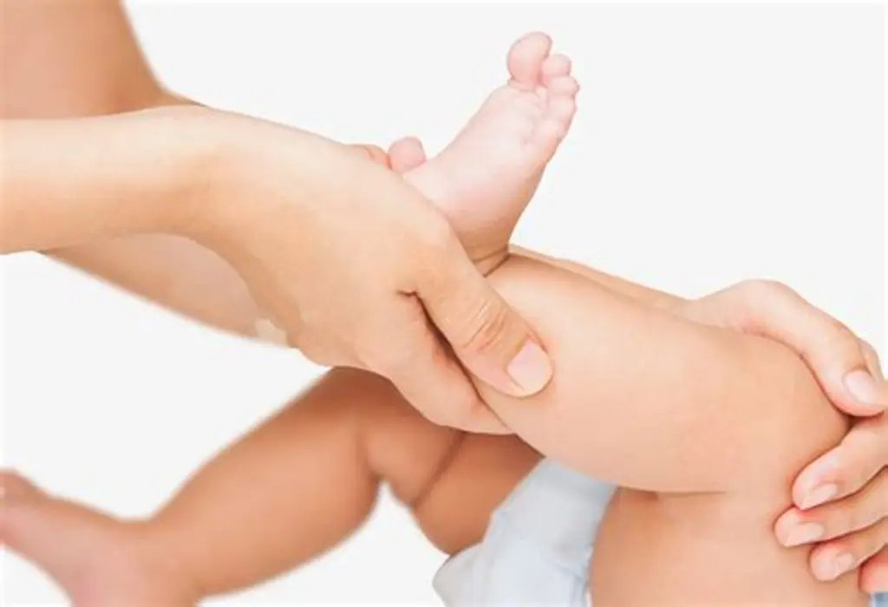

Une prise en charge en kinésithérapie pédiatrique peut être indiquée dans différentes situations, notamment :
- Retard des acquisitions motricesDifficultés à tenir la tête, à s’asseoir, à ramper, à se mettre debout ou à marcher, selon l’âge de l’enfant.
- Troubles de l’équilibre et de la coordinationDifficultés à maintenir une posture stable ou à réaliser certains mouvements.
- Troubles du tonus musculaireCertaines situations caractérisées par une diminution ou une augmentation du tonus musculaire.
- Affections neurologiquesAccompagnement moteur de certains enfants présentant une pathologie neurologique, selon leurs besoins.
- Difficultés fonctionnelles après une blessure ou une intervention chirurgicaleRécupération progressive de la mobilité et des capacités physiques.
- Pathologies du piedPied bot, pied varus, pied équin…

Vous vous posez des questions sur le développement moteur de votre enfant ? Contactez-moi pour échanger sur sa situation et la prise en charge adaptée.
Me contacter